Folk Metal band from Marche, ItalyOUR STORY
“Haegen” is a folk-metal project born in 2012 in Osimo (AN – Center Italy), the members from the original line-up were: Samuele Secchiaroli (guitar and backing vocals), Leonardo Lasca (voice), Tommaso Sacco (drums), Eugenio Cammoranesi (keyboards and backing vocals) and Nicola Scalzotto (bass and backing vocals).
After the release of the first self-titled demo “Haegen”, the band meet and add Federico Padovano to the line up as flute and backing vocals in 2014 and with him they record the Ep “Tales from Nowhere”(released in 2015)
In 2015 Nicholas Gubinelli join the line-up as new bassit, and with him the project release their first full-lenght Immortal Lands in 2017 through Hellbones Records.
Haegen quickly established themselves as one of Italy's most authentic and passionate folk metal bands. Their music, which summons the ancient legends and wild nature of the Marche region, has captivated audiences at some of the country's most prestigious festivals, including the Montelago Celtic Festival, Malpaga Folk & Metal Sound, FEL's Adunata, Yggdrasil Festival, Feffarkhorn and many more.
Following the stop of the “covid-era” the band see the possibility to come back on stages with Gianmarco Eleuteri, new guitar player of the actual line-up, and with him they release the first new single "Mazzamurello".